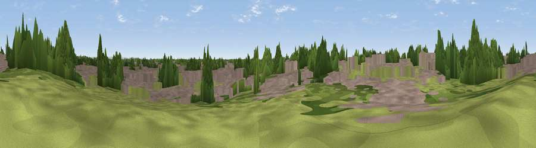

Viewpoint near Askham Bryan
#38992 in England · top 86% of its area beats it · near Askham BryanThe view, rendered

A 360° render of this exact spot computed from the terrain model, tree cover and land cover — summer colours, afternoon light, calibrated against photographs of famous viewpoints. Real trees, hedges and buildings will differ in detail.
The panorama
Grey silhouette: terrain skyline in each direction (720 bearings, Earth curvature and refraction included). Dashed green: skyline with trees (+15 m) and buildings (+8 m) as obstacles. Blue strip: how far the ground is visible on each bearing.
Where the view opens
Wedge length = distance to the farthest visible ground on that bearing (vegetation-aware). Rings at 10, 25 and 50 km.
What fills the view
49% built-up · 22% grassland · 21% woodland · 8% cropland
Angular shares of the visible panorama (visual magnitude), not map area. Landscape diversity 0.53 (0–1 Shannon).
Key numbers
More beautiful places nearby
The staircase of upgrades: each row has a higher view potential than everything closer. Driving times are estimates from straight-line distance, calibrated against real road routing — check an actual route before setting out.
| Place | Direction | Drive | Score |
|---|---|---|---|
| Howe Hill | ENE · 2 km | ~4 min | 42.3 |
| Viewpoint near Rufforth | WNW · 3 km | ~7 min | 55.6 |
| Sand Hill | WNW · 18 km | ~32 min | 57.5 |
| Viewpoint near Hambleton | SSW · 19 km | ~32 min | 57.7 |
| Viewpoint near Crayke | N · 20 km | ~34 min | 69.2 |
| Viewpoint near Terrington | NNE · 22 km | ~37 min | 70.4 |
| Viewpoint near Brandsby | N · 22 km | ~37 min | 71.8 |
| Viewpoint near Acklam | ENE · 25 km | ~41 min | 72.0 |
53.94995, -1.13549 · source: osm viewpoint · position refined by local search. Computed location — check access rights before visiting.